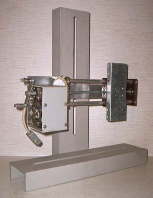
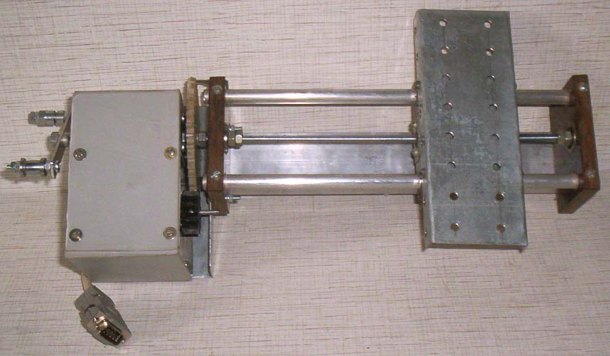
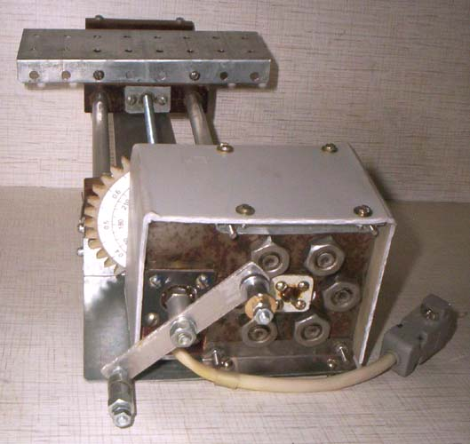
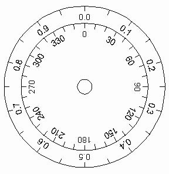
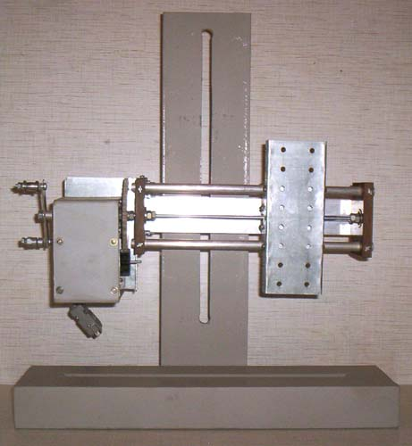
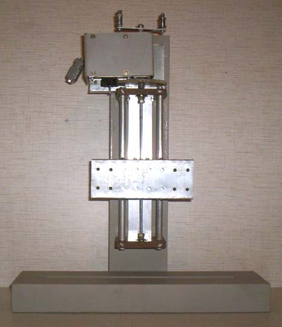
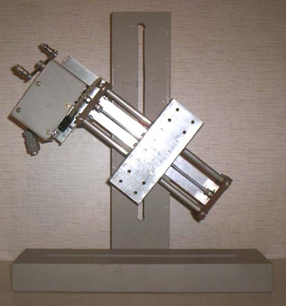

Линейный однокоординатный привод с ходовым винтом и шаговым двигателем-редуктором

Назначение
Линейный однокоординатный привод предназначен для создания устройств, механизмов и установок, в которых требуется линейное перемещение закрепленного на платформе объекта по одной линейной координате, например, при его механической, магнитной или электрической обработке, а также для проведения опытов по изучению влияния линейного перемещения объекта на его параметры и свойства, в частности, измерения зависимости усилия различных исполнительных механизмов от перемещения их рабочего органа (якоря) [1].
Характеристики:
Конструкция привода
Внешний вид линейного однокоординатного привода с винтовой подачей показан на рис. 1. На основании (прямоугольная дюралюминиевая труба сечением 40 х 10 мм2) смонтированы фланцы с направляющими (дюралюминиевый пруток диаметром 10 мм). По направляющим может двигаться каретка с размещенной на ней платформой. В каретке имеется зафиксированная гайка с резьбой М6, через которую пропущен ходовой винт с аналогичной резьбой, закрепленный в подшипниках фланцев. При вращении ходового винта усилие через гайку передается на каретку, и она скользит по направляющим. На ходовом винте установлена шестерня понижающего редуктора, приводимого в движение шаговым двигателем [3], прикрепленным к фланцу. Кроме того, непосредственно на торце ходового винта имеется рукоятка для его вращения вручную. Один оборот ходового винта соответствует перемещению каретки на 1 мм в ту или другую сторону в зависимости от направления вращения. Дополнительно на шестерню ходового винта нанесена круговая шкала (рис. 2, 3), позволяющая отслеживать и отсчитывать перемещения каретки в десятые доли миллиметра (цена деления 0.05 мм) или угол поворота ходового винта в десятках градусов (цена деления 100). Платформа, размещенная на каретке, служит для установки и закрепления изучаемых или обрабатываемых объектов.

Рис. 1. Внешний вид линейного однокоординатного привода с винтовой подачей и шаговым двигателем.

Рис. 2. Вид со стороны шагового двигателя-редуктора и закрепленной на ходовом винте шестерни с круговой шкалой.

Рис. 3. Круговая шкала на шестерне ходового винта.
Линейный однокоординатный привод крепится на станине [4] в произвольных положениях (рис. 4 - 6) с помощью винта М10, скользящего по прорези в основании привода, и гайки-барашка. Выбор способа крепления определяется геометрией выполняемой задачи.

Рис. 4. Горизонтальная установка линейного однокоординатного привода.

Рис. 5. Вертикальная установка линейного однокоординатного привода.

Рис. 6. Наклонная установка линейного однокоординатного привода.
Для совместной работы с шаговым двигателем-редуктором может быть использована система управления шаговыми двигателями на PIC-контроллере [5], дополненная возможностью задавать направление и скорость вращения шагового двигателя. Тактовые импульсы системы управления могут использоваться для измерения перемещения с помощью компьютера с подходящим интерфейсом [2].
Ссылки:
25.08.2018
Альтернативные источники
энергии
Компьютеры и
Интернет
Магнитные поля
Механотронные системы
Перспективные
разработки
Электроника и
технология